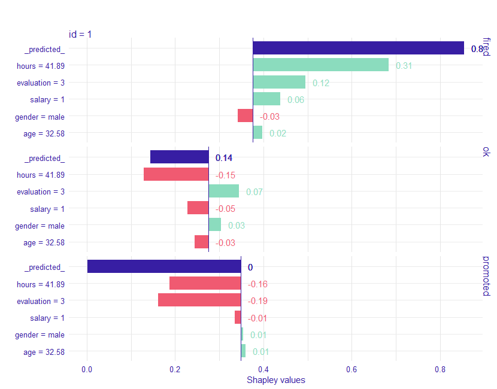
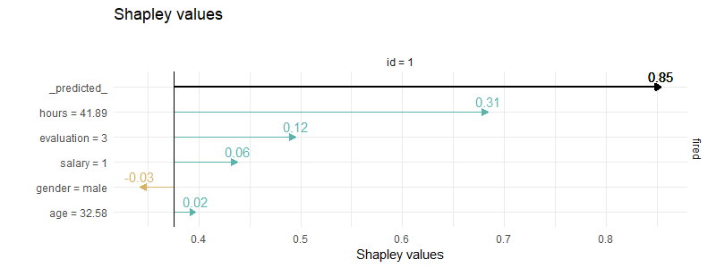

An R wrapper of SHAP python library
Installation and configuration
Install shapper R package
devtools::install_github("ModelOriented/shapper")You can install shap Python library via
shapper::install_shap()If installation didn’t work for some reason. Try installing dependencies first
reticulate::py_install(c("numpy", "pandas"))or
reticulate::conda_install(c("numpy", "pandas"))Python library SHAP can be also installed from PyPI
pip install shapor conda-forge
conda install -c conda-forge shapFor more details how to configure python paths and environments for R see reticulate.
Classification Example
# instal shapper
# devtools::install_github("ModelOriented/shapper")
# install shap python library
# shapper::install_shap()
# load datasets
# devtools::install_github("ModelOriented/DALEX2")
library("DALEX2")
Y_train <- HR$status
x_train <- HR[ , -6]
# Let's build models
library("randomForest")
set.seed(123)
model_rf <- randomForest(x = x_train, y = Y_train)
# here shapper starts
# load shapper
library(shapper)
p_function <- function(model, data) predict(model, newdata = data, type = "prob")
ive_rf <- individual_variable_effect(model_rf, data = x_train, predict_function = p_function,
new_observation = x_train[1:2,], nsamples = 50)
# plot
plot(ive_rf)
# filtered
ive_rf_filtered <- dplyr::filter(ive_rf, `_ylevel_` =="fired")
shapper:::plot.individual_variable_effect(ive_rf_filtered)
Regression example
library(shapper)
library("DALEX2")
library("randomForest")
Y_train <- dragons$life_length
x_train <- dragons[ , -8]
set.seed(123)
model_rf <- randomForest(x = x_train, y = Y_train)
ive_rf <- individual_variable_effect(model_rf, data = x_train,
new_observation = x_train[1,])
plot(ive_rf)
Links
- Browse source code at
https://github.com/ModelOriented/shapper - Report a bug at
https://github.com/ModelOriented/shapper/issues - Source code at
https://github.com/ModelOriented/shapper
License
- GPL
Developers
- Alicja Gosiewska
Author, maintainer - Przemyslaw Biecek
Author - All authors...